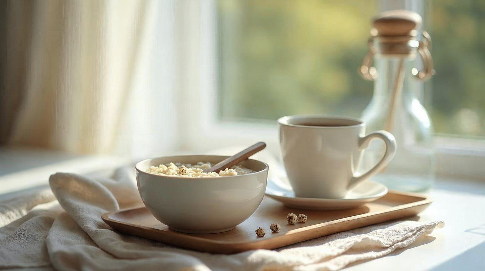
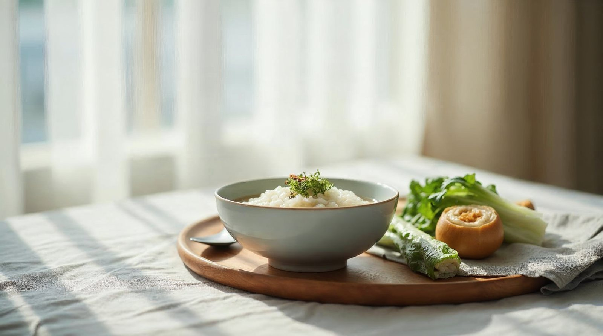
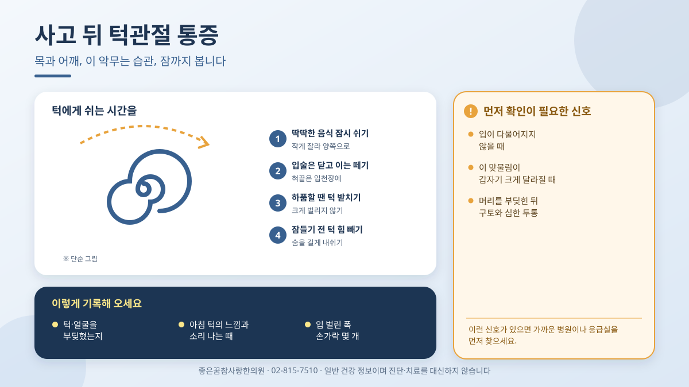

이종호 한의사 감수좋은꿈참사랑한의원 대표원장 (한의사 면허번호 19769)발행 2026-11-26 · 수정 2026-11-26
이 글의 차례
사고가 나고 며칠 뒤 저녁 식탁입니다. 깍두기를 한 입 베어 무는데 귀 앞쪽이 찌릿합니다. 하품을 하다가 턱에서 딱 소리가 나고, 입을 크게 벌리면 어딘가 걸리는 느낌이 듭니다. 목이 아픈 건 알고 있었지만 턱까지 이럴 줄은 몰랐다고 하십니다.
교통사고 뒤 턱의 불편은 생각보다 자주 듣는 이야기입니다. 다만 목과 허리처럼 먼저 떠오르는 곳이 아니라서 진료실에서도 한참 이야기를 나눈 뒤에야 그러고 보니 턱도 불편하다고 꺼내시는 경우가 많습니다. 그래서 저는 사고로 오신 분께 턱을 일부러 한 번 더 여쭙니다.
턱관절은 귀 바로 앞에 있는 작은 관절입니다. 말하고 씹고 삼키고 하품할 때마다 움직이니 하루에도 수천 번 쓰입니다. 이렇게 쉬지 않고 쓰는 관절이 사고 때 충격을 받으면, 불편이 작아도 하루 종일 신경 쓰이게 됩니다.
이 글에서는 사고 뒤 턱이 왜 아플 수 있는지, 목과 턱을 왜 함께 살피는지, 치과나 구강외과 진료와 한의원 진료를 어떻게 나란히 이어 가는지, 식사와 잠, 습관에서 무엇을 바꿔 볼 수 있는지 차례로 정리했습니다.

사고 뒤 턱관절에는 어떤 일이 생기나요?
턱을 직접 부딪히지 않았더라도 턱관절은 충격을 받을 수 있습니다. 뒤에서 받히는 사고에서는 고개가 뒤로 젖혀졌다가 앞으로 꺾이는데, 이때 아래턱이 머리보다 한 박자 늦게 움직이며 입이 벌어졌다 닫히는 힘을 받을 수 있습니다. 그 과정에서 턱관절 주변 인대와 근육이 늘어나거나 긴장할 수 있습니다.
에어백이나 운전대, 앞좌석에 턱이나 얼굴을 부딪힌 경우에는 턱관절이 직접 눌리거나 밀립니다. 이럴 때는 턱 주변의 멍과 붓기, 씹을 때 통증이 비교적 빨리 나타나고, 이가 맞물리는 느낌이 평소와 다르다고 하시는 분도 계십니다.
사고 순간 이를 꽉 무는 것도 흔한 반응입니다. 놀라는 순간 몸 전체가 굳으면서 턱에도 강한 힘이 들어가고, 그 긴장이 며칠 동안 이어지면 관자놀이와 볼 근육이 뻐근해집니다. 이런 불편은 아침에 일어났을 때 더 뚜렷한 경우가 많습니다.
왜 목이 다치면 턱도 함께 불편해질까요
목과 턱은 서로 떨어져 있는 것 같지만 근육과 자세로 단단히 이어져 있습니다. 목 앞쪽과 옆쪽 근육 가운데 일부는 턱뼈와 목뿔뼈에 붙어 있어서, 목이 굳으면 입을 벌리고 다무는 움직임에도 영향을 줍니다.
목이 아프면 우리는 고개를 앞으로 살짝 내밀고 어깨를 움츠린 자세를 취하기 쉽습니다. 이 자세에서는 아래턱이 뒤로 당겨지고 턱관절이 평소와 다른 위치에서 움직이게 됩니다. 며칠 이어지면 입을 벌릴 때 소리가 나거나 한쪽으로 비뚤어지는 느낌이 생길 수 있습니다.
사고 뒤 긴장과 불안, 얕은 잠도 턱을 괴롭힙니다. 마음이 쫓기면 낮에도 모르는 사이 이를 물고 있고, 밤에는 이를 갈거나 악물기 쉽습니다. 그래서 턱의 불편은 목과 어깨, 마음의 긴장과 잠을 함께 살펴야 실마리가 보이는 경우가 많습니다.
비슷해 보여도 다르게 살피는 턱 주변 불편
귀 앞쪽이 아프다고 모두 턱관절 문제는 아닙니다. 다음처럼 나눠 생각해 보면 진료에서 무엇을 먼저 확인할지 정하기 쉽습니다.
- 턱관절 자체의 불편: 입을 벌리고 다물 때, 씹을 때 귀 앞쪽이 아프고 소리가 납니다.
- 씹는 근육의 긴장: 볼과 관자놀이가 뻐근하고, 아침에 더 심하며 눌렀을 때 아픕니다.
- 이와 잇몸 쪽 불편: 특정 이로 씹을 때만 아프거나 찬물에 시립니다. 치과 확인이 먼저입니다.
- 귀 쪽 불편: 귀가 먹먹하거나 울리고 청력이 떨어진 느낌이 있습니다. 이비인후과 확인을 미루지 않는 편이 좋습니다.
사고 전에도 턱에서 소리가 나거나 입 벌리기가 불편하셨다면 그것도 꼭 말씀해 주세요. 치아 교정이나 큰 치과 치료를 받으신 적이 있다면 함께 알려 주세요. 원래 있던 불편이 사고로 커진 것인지, 새로 생긴 것인지에 따라 살피는 순서가 달라집니다.
치과와 한의원 진료는 어떻게 나란히 가나요?
턱이나 얼굴을 직접 부딪혔거나 이가 맞물리는 느낌이 달라졌다면 치과나 구강외과에서 먼저 확인하시길 권합니다. 이가 흔들리거나 금이 갔는지, 턱뼈에 이상이 없는지는 치과·구강외과 검사로 확인하는 것이 정확합니다.
치과에서 큰 이상이 없다는 말을 들었는데도 턱 주변이 뻐근하고 입 벌리기가 불편하다면, 목과 어깨, 씹는 근육의 긴장을 함께 살피는 한의원 진료를 나란히 이어 가실 수 있습니다. 치과에서 장치를 맞추라는 권유를 받으셨다면 그 진료도 계획대로 이어 가시면 됩니다.
먼저 이렇게 여쭙니다
턱이 불편해 오시면 대략 이런 순서로 여쭙니다. 거울 앞에서 입을 천천히 벌려 보고 오시면 이야기가 수월해집니다.
- 사고 때 턱이나 얼굴을 부딪혔나요? 에어백이 터졌나요?
- 턱 불편은 사고 뒤 언제부터 느끼셨나요?
- 입을 벌릴 때 소리가 나나요? 벌리는 중간인가요, 끝인가요?
- 입을 최대한 벌리면 손가락 몇 개가 세로로 들어가나요?
- 씹을 때 한쪽이 더 불편한가요? 딱딱한 음식이나 질긴 음식이 힘드신가요?
- 아침에 턱이 뻐근하거나 이를 간다는 말을 들은 적이 있나요?
목과 어깨의 불편, 두통, 귀 먹먹함, 잠의 질도 함께 여쭙니다. 턱 하나를 묻는 것 같아도 대답을 모아 보면 사고 뒤 몸 전체가 어떤 긴장 상태에 있는지 그림이 그려집니다.
일상에서 먼저 해 볼 수 있는 것
턱이 불편한 시기에는 턱에게 쉬는 시간을 주는 것이 가장 기본입니다. 입을 크게 벌리거나 오래 씹는 일을 잠시 줄이는 것만으로도 턱 주변 근육이 숨을 돌릴 수 있습니다.
- 오징어, 딱딱한 견과류, 질긴 고기, 껌은 잠시 피하기
- 음식은 작게 잘라 양쪽으로 고르게 씹기
- 하품할 때 손으로 턱 아래를 가볍게 받쳐 입이 너무 크게 벌어지지 않게 하기
- 턱을 괴거나 엎드려 자는 자세 피하기
- 낮에 이를 물고 있지 않은지 수시로 확인하기
낮에 턱 긴장을 푸는 간단한 방법이 있습니다. 입술은 살짝 다물고, 윗니와 아랫니는 살짝 떨어뜨리고, 혀끝은 윗니 뒤 입천장에 가볍게 댑니다. 이 자세를 기억해 두고 휴대폰 알람이나 모니터 메모로 하루 몇 번씩 떠올려 보세요.
붓기와 열감이 있는 초기에는 차가운 수건을 짧게 대고, 뻐근함이 중심이 되면 따뜻한 수건을 볼과 관자놀이에 대는 것이 편하게 느껴질 수 있습니다. 찜질 뒤 손끝으로 볼 근육을 원을 그리며 부드럽게 문질러 주셔도 좋습니다.

턱이 불편한 동안의 식사는 이렇게
씹는 일이 부담스러우면 끼니를 대충 넘기기 쉽습니다. 그런데 사고 뒤 몸이 회복하는 시기에는 단백질과 채소를 고르게 드시는 것이 중요합니다. 씹기 편한 형태로 바꾸는 것이 굶거나 대충 드시는 것보다 몸에 더 도움이 됩니다.
두부, 달걀찜, 생선살, 잘게 다진 고기, 푹 익힌 채소, 죽이나 진밥처럼 부드러운 음식이 턱 부담을 덜어 줍니다. 사과처럼 크게 베어 무는 과일은 얇게 썰어 드시고, 빵은 한입 크기로 뜯어 드시면 입을 크게 벌리지 않아도 됩니다.
뜨겁거나 아주 찬 음식은 턱 주변 근육을 움츠러들게 할 수 있으니 미지근한 온도로 드셔 보세요. 식사 시간은 서두르지 말고 평소보다 조금 길게 잡아, 양쪽으로 천천히 고르게 씹는 연습을 함께 하시면 좋습니다.
말을 많이 하는 일과 목 자세
상담, 강의, 전화 응대처럼 말을 많이 하는 일을 하신다면 턱이 쉴 틈이 더 부족합니다. 한 시간에 한 번은 입을 다물고 이를 떼어 둔 채 숨을 고르는 시간을 짧게라도 만들어 보세요. 물을 자주 마셔 입안을 촉촉하게 하는 것도 도움이 됩니다.
모니터나 휴대폰을 볼 때 고개가 앞으로 쭉 나가 있지 않은지도 살펴 주세요. 고개가 앞으로 나가면 아래턱이 뒤로 당겨지며 턱관절에 부담이 실립니다. 화면을 눈높이로 올리고, 귀가 어깨선 위에 오도록 의자에 등을 기대는 것부터 시작하면 됩니다.
전화를 어깨와 귀 사이에 끼고 통화하는 습관이 있다면 이어폰으로 바꿔 보세요. 한쪽으로 고개를 기울인 채 말하는 자세는 목과 턱을 한꺼번에 비틀어 놓습니다. 노래 부르기나 관악기 연주처럼 입을 크게 쓰는 취미도 불편이 줄 때까지 잠시 쉬어 가시길 권합니다.
잠과 마음의 긴장도 턱과 이어집니다
사고 뒤 잠을 설치는 분이 많습니다. 잠이 얕으면 밤사이 이를 악물기 쉽고, 아침에 턱이 더 뻐근해집니다. 잠들기 전 휴대폰을 내려놓고 어깨와 목을 따뜻하게 한 뒤, 숨을 길게 내쉬며 턱의 힘을 빼는 시간을 몇 분이라도 가져 보세요.
사고 장면이 떠오르거나 운전이 무서운 마음이 크다면 그 마음도 턱의 긴장으로 이어질 수 있습니다. 진료실에서는 턱과 함께 잠과 마음의 상태도 여쭙고, 필요하면 마음 건강을 함께 살필 수 있는 진료를 권해 드립니다.
한의원에서 함께 살필 수 있는 경우
- 치과 검사에서 큰 이상은 없다고 들었지만 턱 주변이 계속 뻐근한 경우
- 목과 어깨가 굳으면서 턱과 관자놀이까지 불편해진 경우
- 입을 벌릴 때 소리가 나고 끝까지 벌리기 불편한 경우
- 아침마다 턱이 뻐근하고 두통이 함께 있는 경우
- 사고 뒤 긴장과 얕은 잠 때문에 턱에 힘이 들어가는 경우
좋은꿈참사랑한의원에서는 진찰한 내용을 바탕으로 침과 온열 관리, 필요하면 목과 턱 주변을 함께 보는 추나 가운데 지금 상태에 맞는 것을 정합니다. 턱관절 자체의 불편이 중심인지, 목과 씹는 근육의 긴장이 중심인지에 따라 살피는 자리가 달라집니다.
한약 상담이 필요한 경우에는 드시는 약을 먼저 확인하고 신중하게 정합니다. 병원이나 치과에서 처방받은 약이 있다면 처방대로 이어 가시고, 치과 장치나 진료 일정도 그대로 함께 가져가시면 됩니다.
자동차보험으로 진료를 받으실 수 있는지는 상황마다 다를 수 있습니다. 자동차보험 적용과 접수 절차는 방문 전 전화(02-815-7510)로 확인해 주세요.
이렇게 기록해 오시면 상담이 쉬워집니다
턱의 불편은 하루 중 언제, 무엇을 할 때 심한지가 중요합니다. 일주일 정도만 간단히 적어 와 주세요.
- 사고 날짜와 턱이나 얼굴을 부딪혔는지 여부
- 아침에 일어났을 때 턱의 느낌
- 식사 중 불편했던 음식과 씹은 쪽
- 입을 벌릴 때 소리가 난 때와 걸린 느낌
- 두통, 귀 먹먹함, 목과 어깨 불편이 함께 있었던 날
입을 최대한 벌렸을 때 세로로 손가락이 몇 개 들어가는지 일주일에 한 번씩 적어 보시면 변화를 보기 쉽습니다. 억지로 벌리지 말고 불편이 느껴지는 지점에서 멈추세요.
입을 벌릴 때 턱이 한쪽으로 비뚤어지며 열린다면 거울 앞에서 휴대폰으로 짧게 영상을 찍어 두셔도 좋습니다. 말로 설명하기 어려운 움직임이 영상에서는 한눈에 보이고, 시간이 지나며 어떻게 달라지는지 비교하기도 쉽습니다.
턱이 편해지면 하루가 가벼워집니다
턱은 하루 종일 쓰는 곳이라 작은 불편도 크게 느껴집니다. 밥 먹는 시간이 부담스러워지고, 말을 오래 하면 피곤해지고, 아침마다 뻐근한 턱으로 하루를 시작하게 됩니다.
턱이 불편해도 이 정도로 진료를 받아도 되나 망설이시는 분이 많습니다. 하지만 사고 뒤에 새로 생긴 불편이라면 작아 보여도 처음부터 함께 적어 두는 편이 좋습니다. 목과 허리 진료를 받으러 오실 때 턱 이야기도 꼭 한 줄 덧붙여 주세요.
턱과 목, 어깨, 잠은 한 줄로 이어져 있습니다. 어느 하나가 조금 풀리면 다른 곳도 따라 숨을 돌릴 수 있습니다. 그 연결을 함께 찾아가는 것이 사고 뒤 턱을 살필 때 제가 가장 중요하게 여기는 일입니다.
이번 주에는 딱딱한 음식 잠시 쉬기, 낮에 이를 떼어 두기, 잠들기 전 턱 힘 빼기 가운데 하나를 골라 시작해 보세요. 다음에 오시면 그 한 가지가 어땠는지부터 여쭙고, 기록을 함께 펼쳐 보며 다음 걸음을 정하겠습니다.
이런 증상은 먼저 확인이 필요합니다
- 입이 전혀 다물어지지 않거나 이가 맞물리는 모양이 갑자기 크게 달라진 경우
- 얼굴이 심하게 붓거나 감각이 둔해진 경우, 또는 머리를 부딪힌 뒤 구토·심한 두통·의식 흐림 가운데 하나라도 있는 경우
이런 신호가 있으면 한의원보다 가까운 병원이나 응급실을 먼저 찾으세요.
함께 읽으면 좋은 글
- 턱에서 소리가 나고 입이 잘 안 벌어지는 턱관절 장애는 어떻게 살피나요?
- 편타손상(채찍질 손상)은 무엇이고 어떤 때 병원을 먼저 가나요?
- 입을 벌릴 때 턱에서 소리가 나고 불편하면 어떻게 살피나요?
- 교통사고 뒤 목이 뻐근하면서 머리도 아플 때는 무엇을 먼저 확인하나요?
- 교통사고 뒤 운전이 무섭고 장면이 떠오를 때는 어떻게 지내면 되나요?

여쭙는 것
- 사고 때 턱이나 얼굴을 부딪혔나요? 에어백이 터졌나요?
- 턱 불편은 사고 뒤 언제부터 느끼셨나요?
- 입을 벌릴 때 소리가 나나요? 벌리는 중간인가요, 끝인가요?
생활에서 해 볼 것
- 오징어, 딱딱한 견과류, 질긴 고기, 껌은 잠시 피하기
- 음식은 작게 잘라 양쪽으로 고르게 씹기
- 하품할 때 손으로 턱 아래를 가볍게 받쳐 입이 너무 크게 벌어지지 않게 하기
한의원에서 함께 살필 것
- 치과 검사에서 큰 이상은 없다고 들었지만 턱 주변이 계속 뻐근한 경우
- 목과 어깨가 굳으면서 턱과 관자놀이까지 불편해진 경우
- 입을 벌릴 때 소리가 나고 끝까지 벌리기 불편한 경우
먼저 확인이 필요한 신호
- 입이 전혀 다물어지지 않거나 이가 맞물리는 모양이 갑자기 크게 달라진 경우
- 얼굴이 심하게 붓거나 감각이 둔해진 경우, 또는 머리를 부딪힌 뒤 구토·심한 두통·…
한눈에 보는 표
| 구분 | 핵심 |
|---|---|
| 여쭙는 것 | 사고 때 턱이나 얼굴을 부딪혔나요? 에어백이 터졌나요? 턱 불편은 사고 뒤 언제부터 느끼셨나요? |
| 생활에서 해 볼 것 | 오징어, 딱딱한 견과류, 질긴 고기, 껌은 잠시 피하기 음식은 작게 잘라 양쪽으로 고르게 씹기 |
| 한의원에서 함께 살필 것 | 치과 검사에서 큰 이상은 없다고 들었지만 턱 주변이 계속 뻐근한 경우 목과 어깨가 굳으면서 턱과 관자놀이까지 불편해진 경우 |
| 먼저 확인이 필요한 신호 | 입이 전혀 다물어지지 않거나 이가 맞물리는 모양이 갑자기 크게 달라진 경우 얼굴이 심하게 붓거나 감각이 둔해진 경우, 또는 머리를 부딪힌 뒤 구토·심한 두통·의식 흐림 가운데 하나라도 있는 경우 |
자주 묻는 질문
턱을 부딪히지 않았는데도 사고 뒤 턱이 아플 수 있나요?
네, 고개가 크게 젖혀졌다 돌아오는 과정에서 턱관절과 주변 근육이 영향을 받을 수 있고, 사고 순간 이를 꽉 무는 긴장도 이유가 될 수 있습니다. 목과 턱을 함께 살펴봅니다.
치과에 먼저 가야 하나요, 한의원에 먼저 가야 하나요?
턱이나 얼굴을 부딪혔거나 이가 맞물리는 느낌이 달라졌다면 치과 확인을 먼저 권합니다. 큰 이상이 없다는 말을 들은 뒤 이어지는 뻐근함은 한의원 진료와 나란히 살필 수 있습니다.
턱에서 소리가 나면 입을 많이 움직여 풀어야 하나요?
불편한 시기에는 억지로 크게 벌리기보다 쉬게 해 주는 편이 좋습니다. 움직임을 늘리는 시기와 방법은 진찰한 뒤 상태에 맞춰 함께 정합니다.
밤에 이를 가는 것 같은데 어떻게 확인하나요?
함께 자는 가족에게 물어보시거나, 아침에 턱과 관자놀이가 뻐근한지, 이가 시린지를 살펴보세요. 이 갈기가 의심되면 치과에서 이를 보호하는 방법도 함께 상의해 보시길 권합니다.
좋은꿈참사랑한의원은 재진 때 지난번 이야기부터 이어서 여쭙니다. 진료시간과 예약은 오시는 길에서 확인하세요.
어디서 상담받을 수 있나요?
좋은꿈참사랑한의원은 서울 동작구 만양로2길 2 신성빌딩 3층·5층(서울 동작구 상도동, 7호선 상도역 3번 출구 근처)에 있습니다. 한의사 3명(이종호 대표원장, 조영기 수석진료원장, 정원영 진료원장)이 진료합니다. 진료시간은 평일 09:30~20:00(점심 13:00~14:00), 토·일·공휴일 09:30~15:00이며, 방문 전 전화로 확인을 권합니다. 예약은 네이버 예약, 카카오톡 상담, 전화 02-815-7510로 받습니다.
이 글은 일반적인 건강 정보이며 개인의 진단이나 치료를 대신하지 않습니다. 증상이 있거나 복용 중인 약이 있다면 진료를 통해 확인하세요. 치료 효과는 개인마다 다를 수 있습니다.
작성 기준: 일반적으로 알려져 있는 건강 정보를 참고해 정리했습니다(대표원장 감수). 증상 기록은 1~2주 동안 하루 1회, 비슷한 시간에 적어 오시면 지난 상태와 비교하기 쉽습니다.